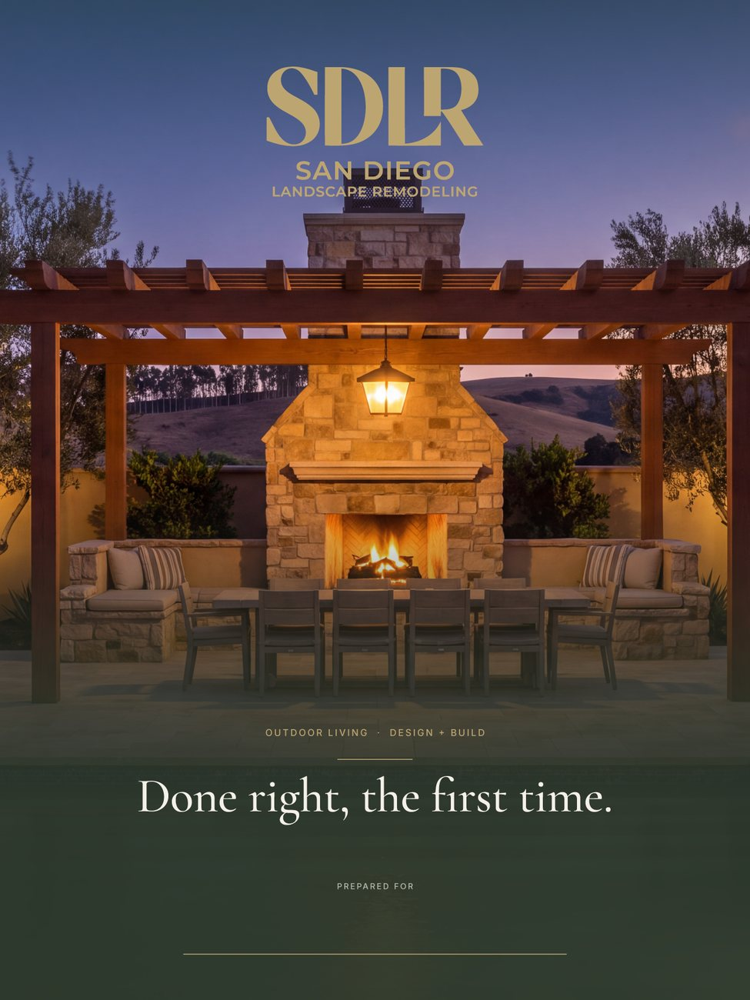
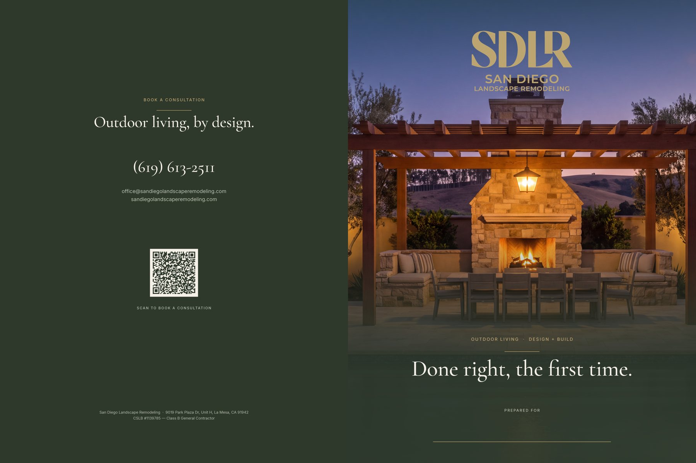
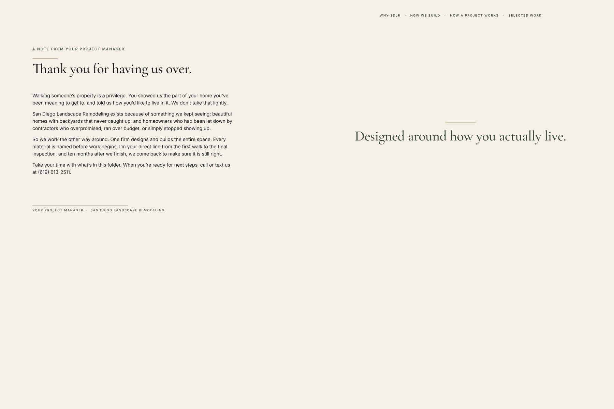
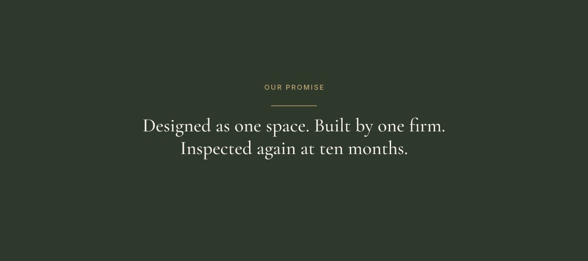

San Diego Landscape Remodeling · Leave-behind kit · Version 4
The folder, with the pergola front
Gio picked the pergola front. It matches the work SDLR most wants to sell and shows a scene a buyer can picture themselves in: table set, fire lit, lantern on. The pool alternative is retired. The inserts and the render card are unchanged from version 2.
The front

Outside spread

Inside and pockets



Still open before the kit prints
- Confirm the promises in the copy (the list is on the version 2 page).
- Real finished-project photos for insert 4, Selected work, with each client’s OK.
- Pick a folder printer; these panels go onto its die template when ordering.
Download
Outlined CMYK, 0.125 in bleed. The editable layered Illustrator file is in Drive under 02 Clients/san-diego-landscape-remodeling/assets/print-ready/leave-behind-kit/2026-11-23-v4/.